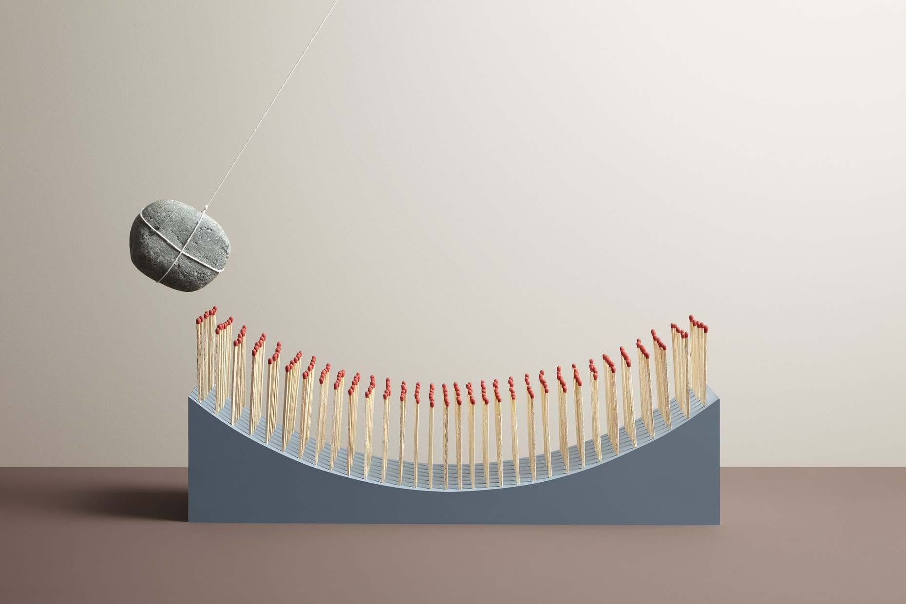
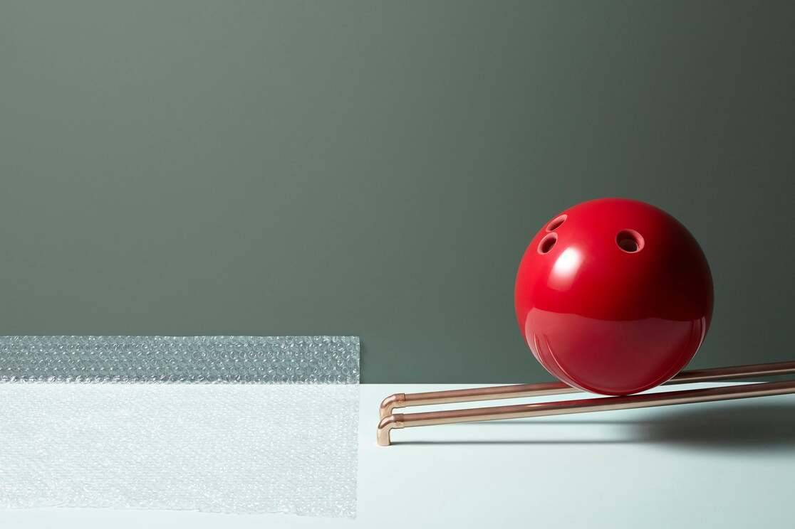
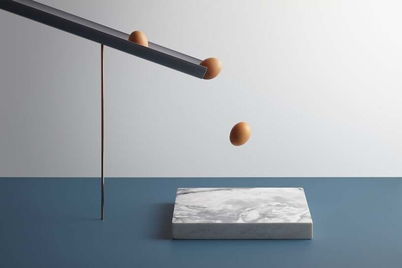
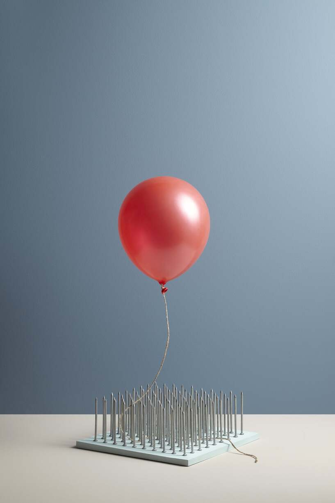
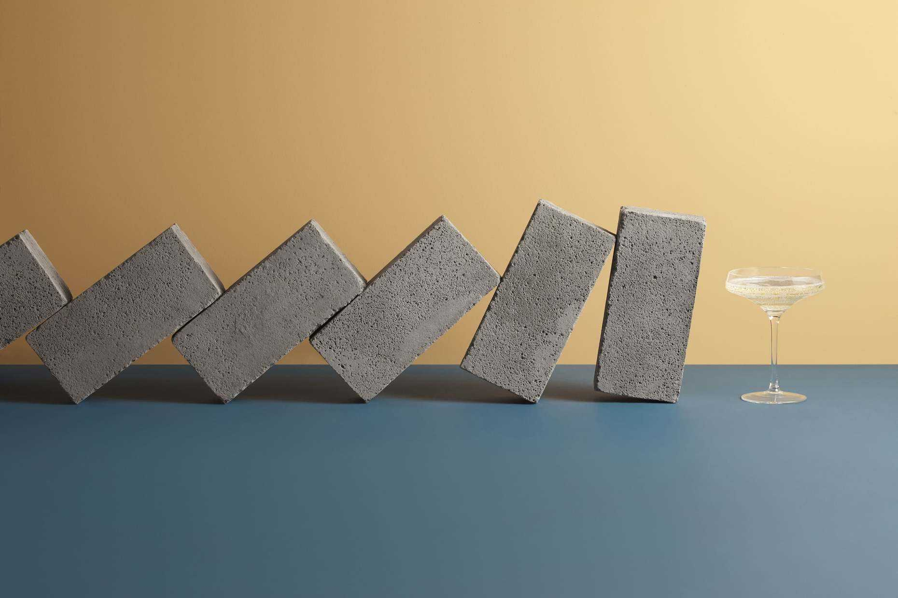

<!DOCTYPE html><html lang="en"><head><meta charset="UTF-8"><meta name="viewport" content="width=device-width, initial-scale=1.0"><meta http-equiv="X-UA-Compatible" content="ie=edge"><link rel="preconnect" href="https://fonts.gstatic.com/" crossorigin="crossorigin"><link rel="stylesheet" href="https://fonts.googleapis.com/css?family=EB+Garamond:500,700|Play:700&amp;display=swap"><link rel="stylesheet" href="main.a32ec266.css"><title>Charm</title></head><body></body></html><header class="header anxious"><nav><ul class="header__nav"><li><a class="header__logo" href="index.html">Charm</a></li><li class="header__nav-item"><a href="index.html">Work</a></li><li class="header__nav-item"> <a href="gallery.html">Gallery</a></li><li class="header__nav-item"> <a href="info.html">Info</a></li></ul></nav></header><main class="main anxious"><section class="section1"> <figure class="section1__img1"><figcaption><h2 class="image-heading image-heading--lg">In Anxious Anticipation</h2><h4 class="image-type">Editorial</h4></figcaption></figure></section><section class="section2"><blockquote class="section2__quote quote"><p class="quote-text">In this article from Kinfolk's Adrenaline Issue, we set out to evoke the hair-raising emotion of anticipation with an image set of stressful scenarios. Our creative team puts our readers on the edge of their seats as the photos creatively capture an everyday stressor in a unique and mischievous way.</p><p class="quote-text quote-text--end">Kinfolk is a lifestyle magazine published by Ouur. Founded in 2011, Kinfolk is now the leading independent lifestyle magazine for young creative professionals and also produces international editions in Japan, China, Korea and Russia.</p></blockquote></section><section class="section3"><div class="section3__img1"></div><div class="section3__img2"></div></section><section class="section4"><blockquote class="section4__quote quote"><p class="quote-text quote-text--end">"A telltale thump of the heart, the flush feeling that starts in your chest and spreads to your fingertips, the tightening of muscles and the quickening of breath: The effects of adrenaline are positively pulse-pounding, but the physical whoosh we feel in our bodies actually starts in our brains."</p></blockquote></section><section class="section5"><div class="section5__img1"></div><div class="section5__img2"></div></section><section class="section6"><div class="section6__img1"></div></section><section class="section-credits"><h4 class="section-credits__heading">Credits</h4><p class="section-credits__text"><span class="cursive">Photographer</span> Aaron Tilley, <span class="cursive">Set Designer</span> Kyle Bean, <span class="cursive">Writer</span> Jordan Kushins, <span class="cursive">Art Director</span> Anja Verdugo, <span class="cursive">Creative Director</span> Nathan Williams, <span class="cursive">Editor Georgia</span> Frances King</p></section><div class="next-page image-heading"> <a href="index.html">Back</a></div></main><footer class="footer"> <ul class="footer__contacts"><li><ul><li> Developed by Sergey Zakharov</li><li> 2019</li><li> Designed by Ouur Media</li></ul></li><li><ul><li> <a href="mailto:zakharov.nsg@gmail.com">zakharov.nsg@gmail.com </a></li><li> <address>Russia, Yekaterinburg</address></li><li><a href="https://www.instagram.com/ouur/" target="blank">Instagram </a></li></ul></li></ul></footer>